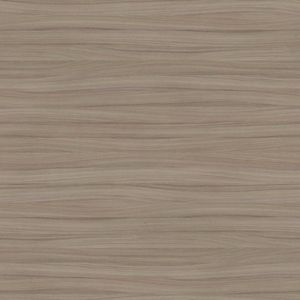
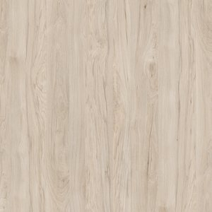
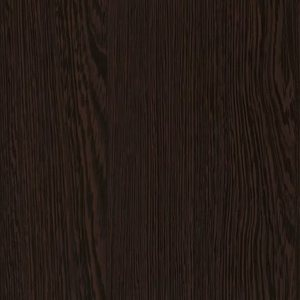

WD-114
Дуб ДрифтвудDriftwood OakDriftvud Eman
REGISTRATION 01 — ЗАВОД DECOSTAR REGISTRATION 01 — DECOSTAR MILL REGISTRATION 01 — DECOSTAR ZAVODI
Печатаем и пропитываем декоративную бумагу полного цикла — от цветоделения до готовой к прессованию партии. Собственная лаборатория контроля на каждом этапе. We print and impregnate decor paper end-to-end — from colour separation to a batch ready for pressing. In-house quality control at every stage. Dekorativ qog'ozni to'liq tsiklda chop etamiz va shimdiramiz — rang ajratishdan presslashga tayyor partiyagacha. Har bosqichda o'z sifat nazorati laboratoriyamiz ishlaydi.

КОЛЛЕКЦИИ ДЕКОРОВDECOR COLLECTIONSDEKOR TO'PLAMLARI
Печатные декоры для ДСП и МДФ: древесные текстуры, камень, текстиль и унипалитра. Каталог ниже — ознакомительная выборка, полная версия — в PDF. Printed decors for particleboard and MDF: wood grain, stone, textile and unicolors. The catalog below is a sample selection — full range in the PDF. DSP va MDF uchun bosma dekorlar: yog'och tekstura, tosh, tekstil va bir rangli variantlar. Quyidagi katalog — tanishuv uchun namuna, to'liq versiyasi — PDF formatida.






В этой категории пока нет декоров — уточните у менеджера. No decors in this category yet — ask your account manager. Bu toifada hozircha dekorlar yo'q — menejerdan so'rang.
PASS 00 — ПРОИЗВОДСТВЕННЫЙ ПРОЦЕСС PASS 00 — PRODUCTION PROCESS PASS 00 — ISHLAB CHIQARISH JARAYONI
Целлюлоза и базовая бумага поступают на входной контроль плотности и влажности. Pulp and base paper undergo incoming checks for weight and moisture. Sellyuloza va asosiy qog'oz zichlik va namlik bo'yicha kirish nazoratidan o'tadi.
Ротогравюрная печать в 4–8 цветов с контролем совмещения по регистрационным меткам. Rotogravure printing in 4–8 colours, registration checked against alignment marks. 4–8 rangli rotogravyura bosmasi, ro'yxatga olish belgilari bo'yicha moslik nazorati bilan.
Пропитка меламиновыми смолами, дозированная по плотности декора. Melamine resin impregnation, dosed to the decor's weight. Dekor zichligiga qarab dozalangan melamin smolalari bilan shimdirish.
Термопрессование на ДСП/МДФ под давлением, синхронизация тиснения с рисунком. Hot-pressing onto particleboard/MDF, embossing synchronised with the print. DSP/MDF ustiga bosim ostida issiq presslash, relyefni rasmga sinxronlash.
Проверка цвета, блеска и износостойкости перед упаковкой и отгрузкой. Colour, gloss and abrasion checks before packing and shipment. Qadoqlash va jo'natishdan oldin rang, yaltiroqlik va chidamlilikni tekshirish.
ПРЕИМУЩЕСТВАADVANTAGESAFZALLIKLAR
От печати до пропитки на одной площадке — меньше посредников и сроков. From printing to impregnation on one site — fewer intermediaries, shorter lead times. Bosishdan shimdirishgacha bitta maydonda — vositachilar va muddatlar kamroq.
Разработка декора под заказчика — от цветоделения до тиражного цилиндра. Custom decor development — from colour separation to the production cylinder. Mijoz uchun dekor ishlab chiqish — rang ajratishdan tirajli silindrgacha.
Собственная лаборатория проверяет цвет, плотность и износостойкость. In-house lab checks colour, weight and abrasion resistance. O'z laboratoriyamiz rang, zichlik va chidamlilikni tekshiradi.
Собственный склад готовых декоров и отлаженная логистика поставок. In-house finished-decor stock and streamlined delivery logistics. Tayyor dekorlar ombori va yo'lga qo'yilgan yetkazib berish logistikasi.
Продукция соответствует требованиям к материалам для мебели и напольных покрытий. Products meet requirements for furniture and flooring surface materials. Mahsulotlar mebel va pol qoplamalari uchun material talablariga javob beradi.
УСТОЙЧИВОЕ РАЗВИТИЕSUSTAINABILITYBARQAROR RIVOJLANISH
Работаем с поставщиками бумаги, соответствующими требованиям ответственного лесопользования (FSC/PEFC — статус сертификации уточняется). We work with paper suppliers meeting responsible forestry requirements (FSC/PEFC — certification status to be confirmed). Mas'uliyatli o'rmon xo'jaligi talablariga javob beradigan qog'oz yetkazib beruvchilar bilan ishlaymiz (FSC/PEFC — sertifikat holati aniqlanmoqda).
Контролируем расход смол и энергопотребление линии пропитки, снижаем объём отходов печати. We monitor resin use and impregnation-line energy consumption, and reduce print waste. Smola sarfi va shimdirish liniyasining energiya sarfini nazorat qilamiz, bosma chiqindilarini kamaytiramiz.
Политика устойчивого развития доступна по запросу — раздел наполняется актуальными документами. Our sustainability policy is available on request — this section is being populated with current documents. Barqaror rivojlanish siyosati so'rov bo'yicha mavjud — bo'lim dolzarb hujjatlar bilan to'ldirilmoqda.
СЕРТИФИКАТЫ И ЦИФРЫCERTIFICATES & NUMBERSSERTIFIKATLAR VA RAQAMLAR
НАМ ДОВЕРЯЮТTRUSTED BYBIZGA ISHONISHADI
ЗАПРОСИТЬ ОБРАЗЕЦREQUEST A SAMPLENAMUNA SO'RASH
Оставьте заявку — подберём декор под ваше производство и вышлем образец с техническими данными. Leave a request — we'll match a decor to your production line and send a sample with technical data. So'rov qoldiring — ishlab chiqarishingizga mos dekorni tanlab, texnik ma'lumotlar bilan namuna yuboramiz.